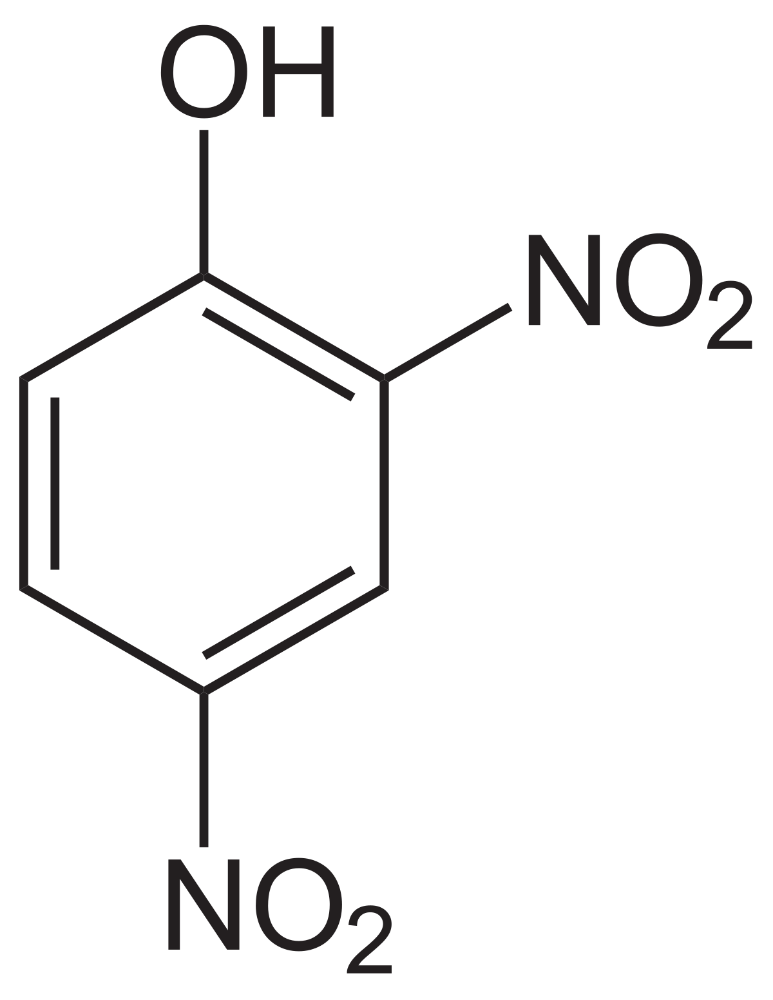

Acaricida: 2,4-dinitrofenol
Estrutura
2,4-dinitrofenol

Função Orgânica
- • Fenol
- • Nitrocompostos
Classificação Toxicológica
Classificação 1
Aplicações e Curiosidades
Trata-se de um sólido inodoro e de cor amarela. É utilizado no fabrico de tintas, conservantes de madeira, herbicidas, pesticidas e explosivos. É de salientar que, apesar de o 2,4-DNP ser publicitado como uma substância segura, os riscos da sua administração ultrapassam largamente os benefícios. O 2,4-DNP possui uma janela terapêutica muito estreita; isto é, o intervalo entre a dose “segura” e a dose tóxica é muito pequeno, sendo assim extremamente fácil entrar num estado de overdose.